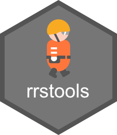

RoboCupRescue Simulation competition maps
competition_maps.RdA dataset containing information about the maps used in past RoboCupRescue Simulation competitions. It includes the competitions year, the name of the map, and the official URL to download the map data.
Format
A data.frame with 15 rows and 3 columns:
- year
An integer representing the year of the competition.
- map
A character string indicating the name of the map data.
- url
A character string containing the official download URL for the map data.
Examples
# Show the dataset
competition_maps
#> year map
#> 1 2024 eindhoven1
#> 2 2024 kobe1
#> 3 2024 vc1
#> 4 2024 ny1
#> 5 2024 joao1
#> 6 2024 sydney1
#> 7 2024 eindhoven2
#> 8 2024 montreal1
#> 9 2024 istanbul1
#> 10 2024 paris1
#> 11 2024 sf1
#> 12 2024 kobe2
#> 13 2024 eindhoven3
#> 14 2024 vc2
#> 15 2024 bordeaux1
#> url
#> 1 https://cdn.robocup.org/rsim/public/competitions/2024-RSL/info/agent/results/eindhoven1/eindhoven1.7z
#> 2 https://cdn.robocup.org/rsim/public/competitions/2024-RSL/info/agent/results/kobe1/kobe1.7z
#> 3 https://cdn.robocup.org/rsim/public/competitions/2024-RSL/info/agent/results/vc1/vc1.7z
#> 4 https://cdn.robocup.org/rsim/public/competitions/2024-RSL/info/agent/results/ny1/ny1.7z
#> 5 https://cdn.robocup.org/rsim/public/competitions/2024-RSL/info/agent/results/joao1/joao1.7z
#> 6 https://cdn.robocup.org/rsim/public/competitions/2024-RSL/info/agent/results/sydney1/sydney1.7z
#> 7 https://cdn.robocup.org/rsim/public/competitions/2024-RSL/info/agent/results/eindhoven2/eindhoven2.7z
#> 8 https://cdn.robocup.org/rsim/public/competitions/2024-RSL/info/agent/results/montreal1/montreal1.7z
#> 9 https://cdn.robocup.org/rsim/public/competitions/2024-RSL/info/agent/results/istanbul1/istanbul1.7z
#> 10 https://cdn.robocup.org/rsim/public/competitions/2024-RSL/info/agent/results/paris1/paris1.7z
#> 11 https://cdn.robocup.org/rsim/public/competitions/2024-RSL/info/agent/results/sf1/sf1.7z
#> 12 https://cdn.robocup.org/rsim/public/competitions/2024-RSL/info/agent/results/kobe2/kobe2.7z
#> 13 https://cdn.robocup.org/rsim/public/competitions/2024-RSL/info/agent/results/eindhoven3/eindhoven3.7z
#> 14 https://cdn.robocup.org/rsim/public/competitions/2024-RSL/info/agent/results/vc2/vc2.7z
#> 15 https://cdn.robocup.org/rsim/public/competitions/2024-RSL/info/agent/results/bordeaux1/bordeaux1.7z